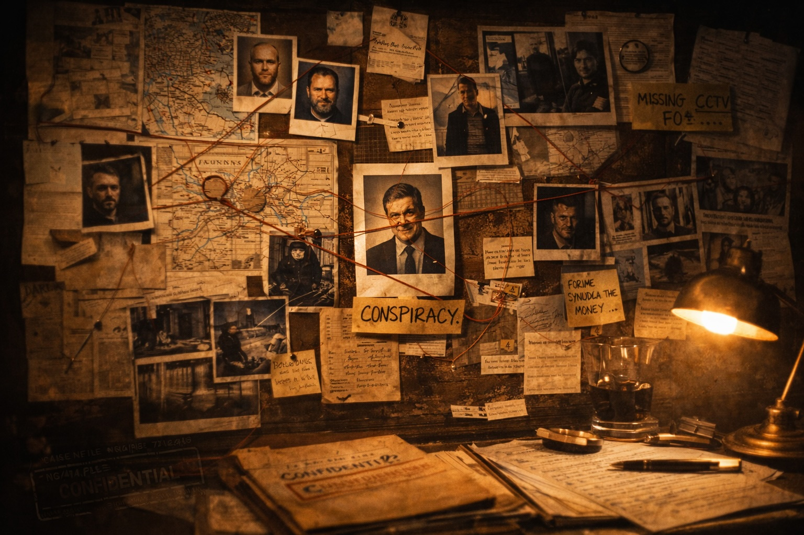

R v Lilley & Sullivan began its life in Wigan Magistrates court. Little did I realise the disrespect for CTL law which would be on display in all its sordid glory in this North West town. They had a reception party lying in wait to nail the Nicholas Green Solicitors’ roadshow.
Phil Sullivan (who I acted for) was charged with a large scale conspiracy to supply cocaine which had hit the headlines. The NCS touted it as a major coup against an organised crime group which had flooded the streets of the north-west. Both Sullivan and Lilley were Cat A high-risk prisoners, who were accompanied to the courthouse with a battalion of armed police. Sirens wailed, and streets were cordoned off, as these ‘most wanted’ headed to court.
After embarrassing law enforcement in the case of R v Hulme, I should have appreciated Mr G was not going to be given the run of this Wigan court. Surely the NCS had learned its lesson on the application of ex parte Briggs (2).
I was honing my skills on CTL and, early on, I requested the court to extend my legal aid order to cover representation by counsel. This is permitted in serious and complex cases. The court clerk agreed to this. I did not in reality require counsel’s advices, but it would mean, once papers were served by the CPS, there could be no rush to commit for trial at Crown Court. At least, that was my naive belief.
I would sit back and wait with interest to see if the CPS discharged its duties on ‘due expedition’. Before we get to that point, I was royally entertained by the antics of one Julian Linskill (JL), a solicitor from Liverpool, who sought to represent Lilley.
A local Wigan lawyer currently acted for Lilley and had represented him in his minor criminal career to date. I struck up a conversation with him. He was a lovely man who indicated, if Linskill had only bothered to speak with him, he would have agreed to the transfer of legal aid. Instead, JL had engaged directly with the court in a robust manner and had his request flatly refused.
JL was to apply in open court for a transfer and he turned up over an hour late for the hearing - hardly a promising start when wanting to garner favour, especially when armed police, with all the inherent costs, were in tow.
The Scouser, when he arrived, made no attempt to issue apologies, but headed straight for the cells. Maybe this was for a site inspection, given what was about to unfold. The court clerk, on learning JL was in the building, called the case ‘on’.
JL rose to his feet to request the transfer of legal aid. There was not a glimmer of humour, or a hint of reticence, as he demanded the local lawyer bite the dust. He was in Wigan for a fight. I began to smile, as the Liverpool train which had set off from Lime Street was heading for the buffers.
So out of touch with reality was JL, he heard me giggling behind him and believed this was me lending support to his application. I was keen to shake my head at the Magistrates in disbelief at what was transpiring. I hardly wanted to be tagged with JL when it came to the complex and weighty matters of a challenge to the CTL.
It was obvious to everyone in court there was going to be no transfer of legal aid. He began to talk over the court clerk and all requests for silence were ignored. The Chairman of the Bench intervened, in the hope he could bring JL to heel. He, too, was rebuffed as JL hammered on about justice, human rights and the kitchen sink.
I glanced round at Phil, who had tears in his eyes in the dock. A contempt of court was raised by the court clerk, but this did not quell the Liverpudlian’s ire that his will was not being enforced. The Chairman repeated contempt would be cited unless JL sat down.
It was at this moment I gained respect for Julian. While still in full flow, he began to gather his paperwork together into a neat pile. The Chairman called for JL’s arrest, and two police officers walked to the front of the court and carted him off to the cells. Breathtaking. He remained incarcerated from 4 pm until 8 pm.
I owe Linskill a debt of gratitude. For all my courtroom achievements, they were surpassed by his command performance before Wigan Magistrates on 15/7/98. As I entered the cell area to see Phil, I heard Lilley shout out, “Is that my lawyer in the cell next to me?“
“Yes, Mr Lilley“, came the gaoler’s reply.
“Tell him he’s sacked! “ Oh, for a Private Eye front cover.
However, after these histrionics R v Sullivan & Lilley was to take a nasty, vengeful turn. We were close to the 70th day when boxes of material landed in my office from the CPS. Those prosecuting had repeated past errors, and were to be met once again by a CTL challenge – perhaps JL could bring the pie charts…
My colleague, Jane Goodwin, attended the hearing which should only have lasted five minutes as we had yet to read the papers, let alone instruct counsel to advise. Those in power had other ideas. The court would only sanction a three day adjournment. Goodwin’s oral representations as to the futility of three days were brushed aside. The court was baring its teeth, in order that the case was kept within the 70 day limit. In that way, they would not need Mr G to attend and provide a lecture on CTL.
Jane was shocked, and placed a call to me. I was horrified at this turn of events, which trashed any semblance of fairness. It was a clever move by the court and CPS for, as you have learnt, once the case is committed to the Crown Court a new CTL commences. Any grievances we would rightly have would evaporate. The NCS had given this careful thought, but I would not submit to this shafting.
“Give me five minutes – I will call you back.” I then sat quietly, attempting to process what avenues, if any, were open to us to break free from the shackles being imposed. Lateral thinking was needed. I picked up the phone to the Leeds Legal Aid Board and spoke with a senior official. I was helped by my firm’s successes in Briggs 1 and 2 and, within a couple of minutes, my firm had been granted an emergency legal aid order to judicially review Wigan Magistrates on their proposed listing of the case in three days’ time.
I relayed this to Goodwin, as this would bring the court to heel. It did not. They preferred a more outrageous ploy. Having stood the matter down, they indicated all court users had altered their commitments and they would conduct the committal that very day! It did not matter the case would run until the early evening, nor that the case papers had not been read by the defence.
Unfortunately, the Magistrates’ bravery was not matched by their intellect. Yes, I could not mount a JR as to the listing of the case, but, once committed, I could JR the lawfulness of the committal itself. I liaised with Goodwin. We would take no part in this sham. We were in no position to mount a ‘no case’ argument and it would do our JR a disservice if we attempted to engage with this corrupted process.
Early that evening, R v Lilley & Sullivan was committed to Wigan Crown Court for trial. The smug faces on the court clerks, prosecutors and police displayed an enjoyment in their handiwork.
No sooner had Phil been ‘sent’ to the Crown, I was deep in discussion with Kris Gledhill. I relayed to him the horror show which had unfolded in Wigan – “At the Pier, Nick?“ “No, the courthouse, Kris.“ The chances of a JR victory were slim, as Kris indicated only once before in English jurisprudence had a committal been quashed. “This is the second, Kris,“ I replied.
The Legal Aid Board once more played its part. On the back of a storming advice from Kris, a certificate was issued to mount a JR challenge. By this time, Linskill had sorted his own financial problems out, and was acting for Lilley. I had the good sense not to involve him in the initial thrust of the JR. He could join with Lilley if we succeeded in obtaining a hearing before the Full Court.
Permission was granted to proceed to a contested hearing, as the dissemination of events in Wigan would make any right-thinking person shudder. I knew our real problem was not the merits of our submissions, but the fact the case related to two high risk prisoners. A ruling in our favour would result in their release.
On the 11th of September 1998, Kris appeared in front of Scott-Baker J, who listened intently to the submissions. In case you feel I have over-egged events in Wigan, I cite the reference to this fine judge’s ruling (citation to be added). Scott-Baker was not willing to toe the party line or fudge the law. He sided with the rule of law, whatever the consequences for the two Cat A prisoners. There had been a breach of natural justice and I quote, “the events of 22/7, in the light of what happened before, taken together, created a situation that was manifestly unfair to both applicants and a breach of natural justice. In the circumstances the committals must be quashed.“
I was heading to another appearance in The Times, and a further citation in Archbold. In Strangeways, Lilley and Sullivan were lugging their belongings from CAT A. They were not even on bail! The quashing of the committal meant the dear old boys in blue would have to start the whole charging process over again.
When they did, another Magistrates court was nominated to ensure it dispensed “natural justice”. Wigan had failed the “smell” test. My plaudits came from outside the profession. On my next visit to Cat A, I unexpectedly received a round of applause from inmates on domestic visits. I smiled – these were not returned by the CAT A guards.
Page 1 of 1